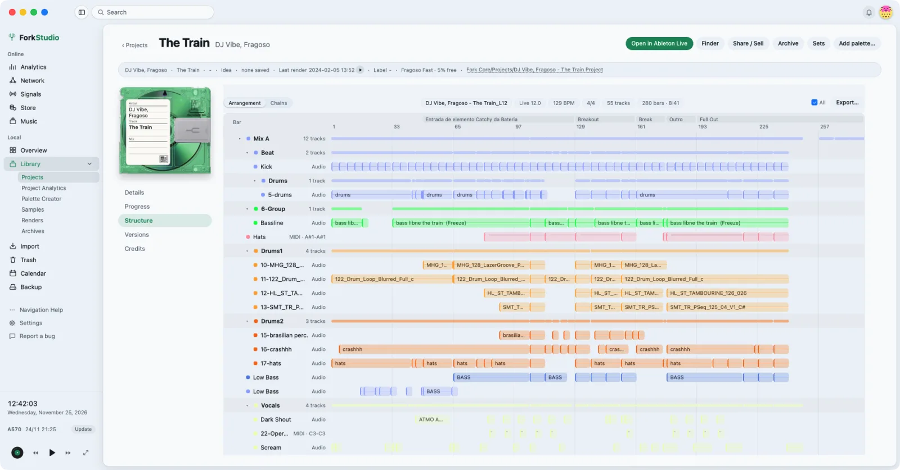
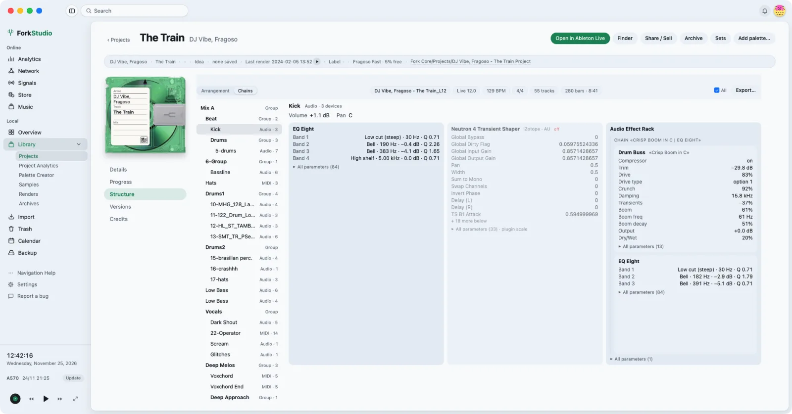
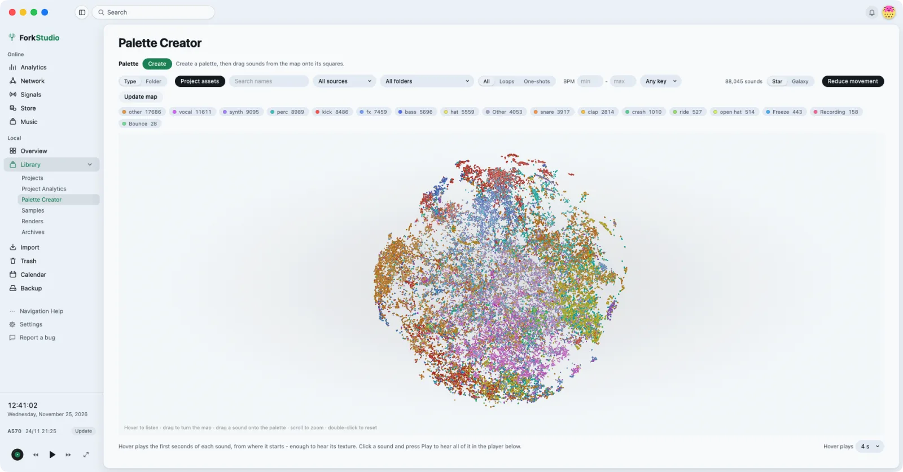
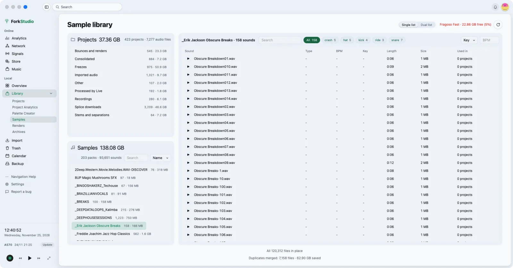
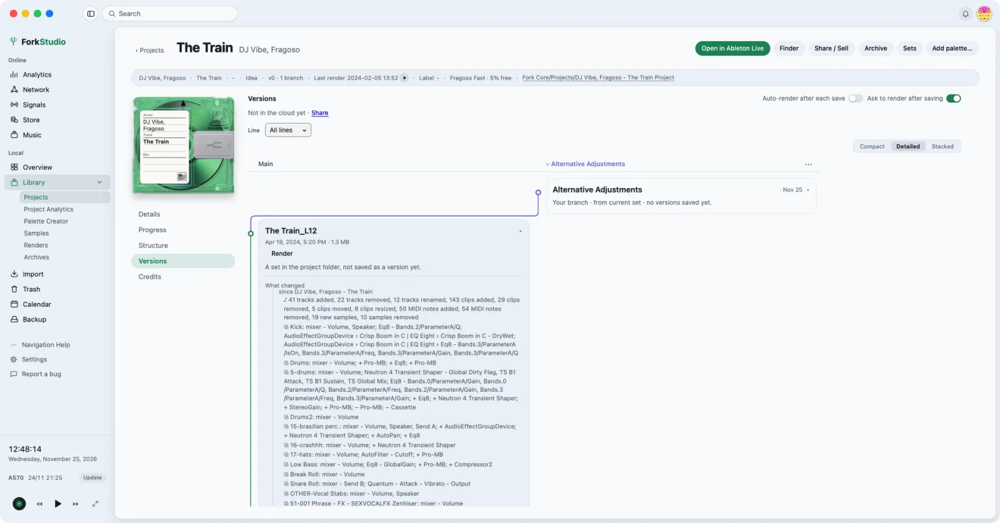

Private Beta
Management tools for engineers, producers, labels, agents, events.
Your data, locally and private
First LookEvery project, sample and version on your own disk, read straight from your sets.





Your whole library at a glance, with status, renders and size.